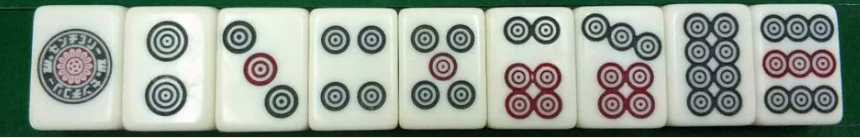
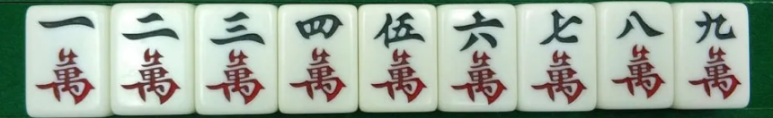
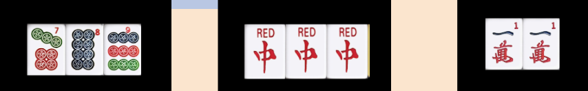
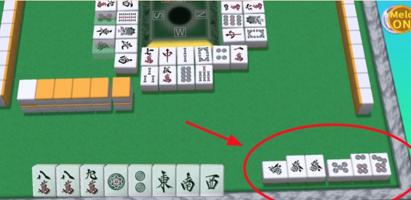

سأعلمك في هذا الدليل كيفية لعب لعبة الماجونغ الياباني

لقد قسمت هذا الدليل إلى ٤ أقسام. الأول هو هذه المقدمة التي ستناقش كيفية عمل اللعبة والقواعد ببساطة. ثم سيساعدك الباقي على وضع هذه المعرفة موضع التنفيذ للعب مع الأصدقاء والعائلة
في لعبة "الماجونغ" تستخدم البلاط للعب وتستخدم بشكل مشابه لأوراق اللعب ، حيث توجد اشكال مختلفه و كل شكل مرقم. هناك ٣ اشكال مختلفة مرقمة من ١ إلى ٩ وشكلين إضافيين سنشرحهما قريبًا

هناك ٤ نسخ متطابقة من كل قطعه، لذا يوجد إجمالي ١٣٦ قطعة
توجد اشكال الدوائر مرقمة من ١ إلى ٩. وهناك ٤ نسخ من كل رقم بحيث يكون مجموعها ٣٦ قطعة دائرية
و يوجد شكل الأحرف الصينيه، مرقمة من ١ إلى ٩. وهناك ٤ نسخ من كل قطعه بحيث يبلغ إجمالي القطع ٣٦ قطع الحروف
والشكل الثالث هو العصي، و ايظا مرقم من ١ إلى ٩. وهناك 4 نسخ من كل رقم بحيث يكون المجموع ٣٦

هذا هو إجمالي ١٠٨ القطع المرقمة.
دعنا الآن نتحدث عن الشكلين الإضافيين ، والتي تسمى الاشراف
الأول هو شكل التنين الذي يحتوي على ٣ تنانين مختلفة، مع ٤ نسخ لكل منها ، وهو إجمالي ١٢
هناك التنين الأحمر والتنين الأخضر والتنين الأبيض أو المربع

الشكل الثانية من الاشراف هي الاتجاهات ، وهي ببساطة الشرق، الجنوب، الغرب، والشمال، مع ٤ نسخ من كل واحدة بإجمالي 16

هذا إجمالي ٢٨ قطعة اشراف بالإضافة إلى ١٠٨ قطعة مرقمة، وهو إجمالي 136 قطعة كما ذكرنا من قبل
من المهم ملاحظة أن اللعبة تأتي في الأصل مع ١٤٤ قطعة مع شكل إضافي يسمى الزهور ، ولكن في معظم الأماكن ، يتم لعب اللعبة بدون شكل الزهور.
اضغط فوق على صورة القطعه في أعلى الصفحه لإلقاء نظرة على صورة من الاشكال الذي ذكرناها في اي وقط خلال هذى الدليل
كيفية أللعب
للعب "الماجونغ"، يجب عليك كدس القطع في شكل حائط بحيث يمكن لكل لاعب أن يأخذ قطعة عندما يحين دوره ويجب أن يبدأ كل لاعب بـ ١٣ قطعة. يمكنك معرفة كيفية إعداد هذا الجدار والأشياء الفنية الأخرى للعب في نهاية الدليل في قسم الإعداد.
للعب ، سيسحب كل لاعب قطعه من الحائط ثم يتجاهل بقطعه مرئيَّ لكل اللاعبين.

الهدف من اللعبة هو إنشاء مجموعات وأول من ينشء كل قطعه في مجموعات يفوز
ومع ذلك ، يجب عليك إكمال شرطين للفوز ، الأول هو أن يكون لديك ٤ مجموعات من ٣ قطع، وزوج (١٤ قطعة إجمالية)
المجموعات من نوعين - ثلاث قطع متطابقة تُعرف أيضًا باسم ثلاثية ، ٣ قطع متسلسله، في نفس الشكل، مثل ٥،٤،٣. ومع المجموعات يجب ان يكون زوج واحد، و هو قطعتين متطابقتين، نفس الرقم و نفس الشكل
الشرط الثاني هو إكمال طريقة للفوز. طرق الفوز هي ببساطة معايير لمجموعاتك ، على سبيل المثال ، إحدى طرق الفوز تسمى flush والتي تتطلب أن تكون جميع مجموعاتك بما في ذلك الزوج من نفس الشكل. يتم سرد جميع طرق الفوز في جدول في قسم كيفية الفوز.
في لعبة الماجونغ يمكنك ان تسرق القطع الذي نزلها لاعب اخر، لتكمل تشكيله
اذا سرقت قطعه لتكمل تشكيلة التسلسل، فهي تسمى "تشي". و هي فقط تُسرق من اللاعب الذي قبلك
اذا سرقت قطعه لتكمل تشكيلة الثلاثي، فهي تسمى "بون". و هي تُسرق من اي لاعب في اي وقط، ثم يصبح الدور دورك
اذا سرقت قطعه لتكمل ٤ اطراف متطابقه، فهي تسمى "كان" ويمكن القيام بذلك أيضًا في أي وقت ، وسوف يتم احتساب مجموعة "kan" هذه على أنها ثلاثية ، لذلك يجب عليك سحب قطعة إضافية لموازنة القطع الخاصة بك
إذا أراد أكثر من شخص السرقة ، فهناك ترتيب للأسبقية ، "pon / kan" اله الاوليه فوق "chi". والفوز ميأخذ الأولوية القصوى
اذا سرقت قطعه لتكمل تشكيله، يجب عليك ان تضع هذه التشكيله على يمينك مرئيَّ لكل اللاعبين والآن لعبتك تسمى لعبه مكشوفه. (واللعبه المكشوفه لها عيوب)
العيب ان بعض طرق الفوز تتم فقط باللعبه المخفيه، لاكن اكثر طرق الفوز يمكن ان تتم فالحالتين باللعبه المكشوفه والمخفيه
كل طريقة للفوز ستمنح اللاعب عددًا معينًا من "هان"
سيتم تحويل هذه "الهان" إلى نقاط في النهاية ويبدأ كل لاعب بـ 25000 نقطة. سيتم تغطية كيفية حساب هذه النقاط في قسم حساب النقاط.
انتقل الآن إلى قسم كيفية الفوز لتتعلم بعض طرق الفوز عند إنشاء مجموعاتك.